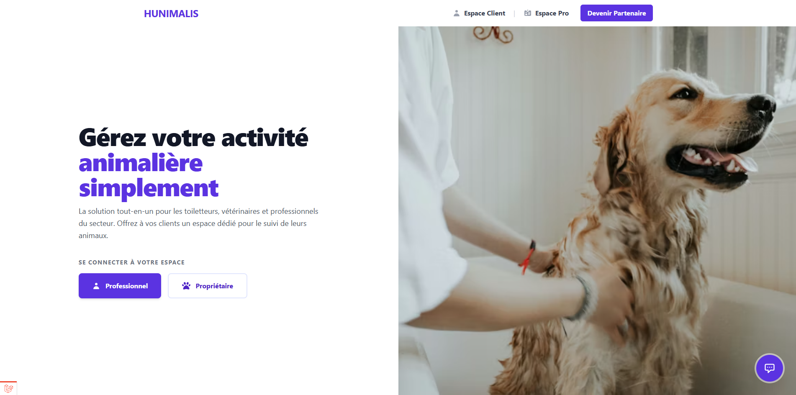

Hunimalis (SaaS Platform)
Full-stack development of a comprehensive SaaS solution for pet professionals (groomers, vets). Features include CRM, appointment scheduling, invoicing, stock management, and an AI-powered assistant. This project led directly to a back-end internship at the company built around it.
View details →